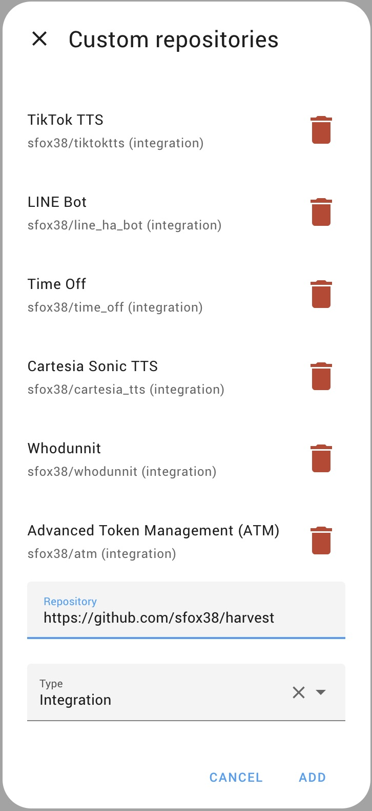

Installation
Install HArvest through HACS, add the integration, and create your first widget. The network section is only needed when visitors connect from outside your trusted network or through a proxy.
Requirements
| Component | Minimum version | Notes |
|---|---|---|
| Home Assistant | 2024.1 | Any installation method works |
| Python | 3.11 | Bundled with HA |
| HACS | any current version | Supported installation method. Manual custom-component installation is possible but unsupported. |
| HA network access | - | Must be reachable by widget visitors. HTTPS/WSS is required when the embedding page uses HTTPS. |
Your Home Assistant instance must be reachable by the people who will view the widgets. Public widgets need a public HTTPS URL such as https://myhome.duckdns.org or https://ha.yourdomain.com. Private widgets may use an HTTP LAN address when every visitor is on that trusted network and the embedding page also uses HTTP. Browsers block an HTTPS page from connecting to an insecure ws:// address.
Popular options for HTTPS remote access: Nabu Casa (easiest, paid), DuckDNS + Let's Encrypt (free), Cloudflare Tunnel (free).
Install via HACS
HArvest is installed as a custom HACS repository. It is not in the default HACS catalog. Manual custom-component installation is possible, but the documented and supported installation path is HACS.

-
1
Add the repository
Open HACS in your HA sidebar. Click the three-dot menu in the top-right corner and choose Custom repositories. Paste
https://github.com/sfox38/HArvestas the URL, set the category to Integration, then click Add. -
2
Download and install
Search for HArvest in the HACS integration list, click it, then click Download. Restart Home Assistant after the download completes.
-
3
Add the integration
Go to Settings > Devices and Services > Add Integration. Search for HArvest and select it. No additional configuration is needed during setup - everything is managed from the panel.
-
4
Open the panel
HArvest now appears in your HA sidebar with a leaf icon. Click it to open the panel.
Once HArvest is installed, head to Quick setup to create your first widget and get it onto a page.
Widget script
You do not need to install or upload the widget script separately. HACS installs the Home Assistant integration, and the integration serves the widget bundle directly out of its own files at {your-HA-URL}/harvest_assets/harvest.min.js. The wizard generates snippets that point at this URL automatically.
This means the widget always matches the version of HArvest currently running on your HA instance. When you update HArvest via HACS, every embedded widget on every site picks up the new bundle on the next page load. There is nothing to upload, no CDN to configure, and no version drift to worry about.
If you use the HArvest WordPress plugin, the plugin enqueues the widget script for you. The plugin's "Widget JS source" setting defaults to the same HA-served URL described above.
Hosting the script yourself (advanced)
If for some reason you don't want visitors loading the widget JS from your HA instance (for example, your site needs to work even when HA is briefly offline), you can self-host instead:
- Download the latest release zip from GitHub Releases. Inside the zip, find
widget/dist/harvest.min.js. - Upload it to your web server.
- In the HArvest panel, go to Settings > Connection > Widget script source and switch to Custom URL. Enter the path to your hosted copy.
The wizard will then generate snippets that use your custom URL instead. Note: when you do this, you become responsible for keeping the widget bundle in sync with the integration version. Use this option only if you have a specific reason to need it.
Network requirements
This section covers advanced deployment choices. You can skip it when every widget visitor can already reach the same Home Assistant URL you use.
Widgets connect directly from the visitor's browser to the configured HA host and port. Public and HTTPS-hosted pages normally use HTTPS/WSS on port 443. Private HTTP pages can use HTTP/WS on a trusted network. No separate WebSocket port or relay server is required.
Public widgets require a publicly reachable HTTPS/WSS endpoint. A reverse proxy such as nginx, Caddy, or Traefik is a common way to provide TLS on port 443 and a clean hostname, but it is not the only option. Native Home Assistant TLS, Nabu Casa, or a secure tunnel can also provide the required endpoint. If an intermediary proxy or tunnel sits between visitors and HArvest, configure it to preserve WebSocket traffic and forward the real visitor IP before relying on HArvest IP restrictions or per-IP rate limiting.
A reverse proxy needs to forward WebSocket upgrade headers and the client IP chain. A minimal nginx location includes:
proxy_set_header Upgrade $http_upgrade;
proxy_set_header Connection "upgrade";
proxy_set_header X-Forwarded-For $proxy_add_x_forwarded_for;
proxy_read_timeout 3600s;
proxy_send_timeout 3600s;After enabling forwarded client IPs, add only the nginx peer IP or narrowly scoped proxy subnet to HArvest's trusted_proxies setting. Caddy and Traefik handle WebSocket upgrades automatically, but their direct peer addresses must still be trusted in HArvest before forwarded IPs are used. Cloudflare Tunnel supports WebSockets; HArvest's keepalive traffic prevents the connection from being completely idle.
Some enterprise networks block WebSocket connections. Visitors in those environments won't see the widgets. HArvest does not have a polling fallback - the connection either succeeds or the card shows an offline state.
Alternate port (optional)
If HA's main port is blocked by a firewall or shared with other services, you can start a lightweight widget transport server on a separate port. In the HArvest panel under Settings > Connection > Widget script source, select Alternate port and enter a port number (e.g. 9050). The server binds to all interfaces (0.0.0.0) and includes permissive CORS headers so any configured origin can load the widget. Changes take effect immediately without restarting HA.
When alternate port is enabled, generated snippets use the alternate address for the widget script, WebSocket connection, icon sets, custom fonts, and renderer scripts. Widgets configured for the main HA port continue to work as well.
The alternate-port server uses plain HTTP, binds to all interfaces, and permits cross-origin asset requests. WebSocket token and origin validation still applies. Use it only on a trusted private network or place it behind a TLS proxy or secure tunnel before exposing it externally. HTTPS pages require an HTTPS/WSS frontend because browsers block plain HTTP and WebSocket content on secure pages.